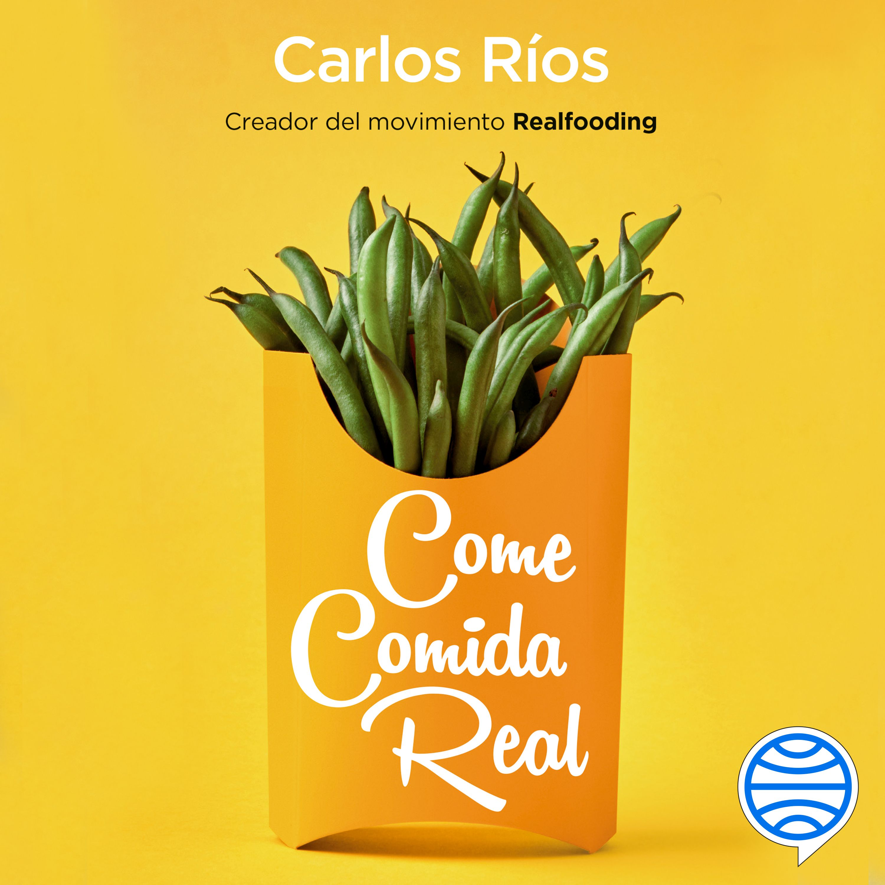

Book Reference
Ríos, Carlos. Come comida real.
This resource was used as background information when developing the educational content about food choices and highly processed foods.
Sources and credits
Explore the sources and resources used to develop the educational content and visual elements of this website.

Reliable sources support useful food education.
Sources
Ríos, Carlos. Come comida real.
This resource was used as background information when developing the educational content about food choices and highly processed foods.
The NOVA classification system was used as a conceptual reference for discussing minimally processed, processed, and ultra-processed foods.
The explanations, examples, comparison content, and practical tips were organized specifically for this educational website.
Food photographs used throughout the Food Guide and page illustrations should be credited to their original sources according to the licenses and attribution requirements of the selected image resources.
The website logo and social media icons are locally stored project assets.
The website uses Poppins for headings and Open Sans for body text through Google Fonts.
This website is designed for educational purposes. It is intended to help visitors understand food processing concepts and practice reading food labels.